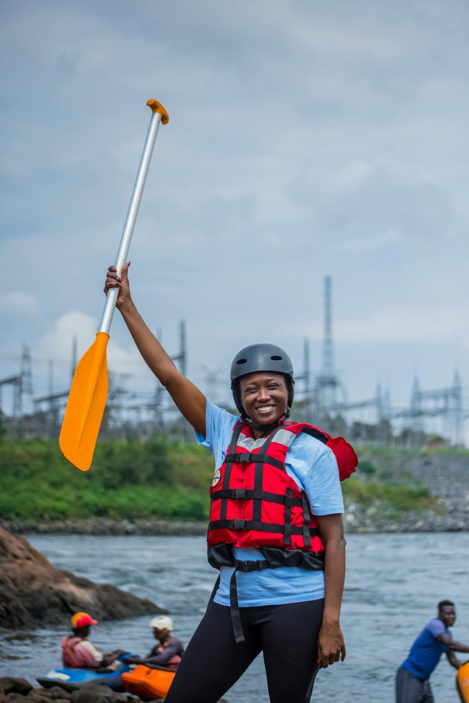

River Moss Expeditions exists to bridge the gap between human curiosity and the untamed wilderness. We believe that the rhythm of the river offers a unique clarity that cannot be found on land.


River Moss Expeditions exists to bridge the gap between human curiosity and the untamed wilderness. We believe that the rhythm of the river offers a unique clarity that cannot be found on land.
Founded in 1995, River Moss Expeditions began with a single raft and a passion for the Nile. What started as a small group of friends navigating local rapids has grown into a professional guiding outfit dedicated to safe, immersive wilderness experiences. Over the decades, we have expanded our fleet and perfected our "Leave No Trace" guiding philosophy. Today, we continue to bridge the gap between human curiosity and the untamed river, ensuring every guest returns with a deeper respect for the water.